Design + Code
5 star review


Responses stay consistent and focused, ensuring decisions move forward without unnecessary tension.
Every revision is tracked, organized, and resolved with clear updates in Figma so nothing gets lost or repeated.
Key changes and rationale are recorded, making the process easier to follow for both clients and developers.


I work with discipline and patience. Design decisions are documented, revisions are handled carefully, and the collaboration stays calm even when the project becomes demanding.
Before designing, I make sure I understand the goal, constraints, and
expectations. Clear direction
early prevents confusion later.

Design files stay organized. Revisions are tracked.
Decisions are documented. This keeps development
and feedback efficient.

Every page is refined with attention to detail and consistency,
ensuring the final result feels
cohesive and ready to move forward.

Hover over the cards to preview each project as it comes into focus. When one catches your attention, select it to explore the work in more detail. if you on mobile device, tap the card to explore the work.
Here's what some of my clients have to say about working together. and you can clicked or tap the Testimonials to validate the experience.

His patience, professionalism, and attention to detail stood out throughout the project. Even when timelines extended, he remained supportive and steady. Every revision was handled with care, and the final result was polished and cohesive.
Working with him was easy. It wasn’t complicated or stressful. He really got what I was trying to do and gave me ideas without being pushy. It wasn’t just a simple “yes, yes,” but he helped me think in a way that still felt like me. I felt safe, like I was working with my best friend at the office. Everything just flowed naturally.
If something is still unclear or specific to your situation, we can simply talk it through before making any decisions.
Revisions are handled systematically. Each change is tracked and resolved with clear updates inside Figma. Key decisions are documented so nothing gets repeated or lost. The goal is steady progress, not circular feedback loops.
I maintain clear and consistent communication through preferred channels, ensuring you are always updated on progress and next steps.
Yes, I prepare organized design files and comprehensive documentation to ensure a smooth handoff and seamless collaboration with development teams.
I remain flexible and communicate proactively. If project scopes change, we discuss adjustments to ensure expectations and delivery stay aligned.
Absolutely. I am comfortable integrating into existing teams, adhering to agency processes, and representing your brand professionally to clients.
If you're planning a project and need reliable design and frontend support, reach out. I’ll review your details and let you know if the timing and scope align.
Check Availability